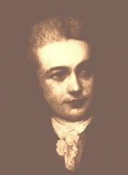

|
|
颂主新歌 |
|
1 Awake, my soul, and with the sun 2 Lord, I my vows to Thee renew. 3 Direct, control, suggest, this day, 4 Praise God, from whom all blessings flow; |
1.太阳将出，我当早起， |
|
https://www.mred365.cn/szxg/7032.html
|
|
|
|
|


https://www.youtube.com/watch?v=P6TaygvxHrc https://youtu.be/dcaKA-zKB8E -
https://youtu.be/i1cwmx9Z0i4
| Text: | Awake, My Soul |
| Author: | Thomas Ken |
| Tune: | MORNING HYMN |
| Composer: | Francois H. Bartholemon |
| Short Name: | Thomas Ken |
| Full Name: | Ken, Thomas, 1637-1711 |
| Birth Year: | 1637 |
| Death Year: | 1711 |
Thomas Ken (b. Berkampstead, Hertfordshire, England, 1637; d. Longleat, Wiltshire, England, 1711)

studied at Winchester College, Hart Hall, and New College, Oxford, England. Ordained in the Church of England in 1662, he served variously as pastor, chaplain at Winchester College (1669-1679), chaplain to Princess (later Queen) Mary in The Hague, and bishop of Bath and Wells (1685-1691). He was a man of conscience and independent mind who did not shirk from confrontations with royalty. When King Charles II came to visit Winchester, he took along his mistress, the famous actress Nell Gwynne. Ken was asked to provide lodging for her. The story is told that Ken quickly declared his house under repair and had a builder take off the roof! He later was dismissed from the court at The Hague when he protested a case of immorality. Then, later in 1688, Bishop Ken refused to read King James II's Declaration of Indulgence in the churches, which granted greater religious freedom in England, and he was briefly imprisoned in the Tower of London. A few years later he refused to swear allegiance to King William, and he lost his bishopric.
Ken wrote many hymns, which were published posthumously in 1721 and republished in 1868 as Bishop Ken's Christian Year, or Hymns and Poems for the Holy Days and Festivals of the Church. But he is best known for his morning, evening, and midnight hymns, each of which have as their final stanza the famous doxology “Praise God, from Whom All Blessings Flow.”
Bert Polman
Tune Information
| Title: | MORNING HYMN (Barthélemon) |
| Composer: | F.-H. Barthélémon (1785) |
| Meter: | 8.8.8.8 |
| Incipit: | 12333 43222 5454 |
| Key: | G Major |
| Copyright: | Public Domain |
| Short Name: | F.-H. Barthélémon |
| Full Name: | Barthélemon, F.-H. (François-Hippolyte), 1741-1808 |
| Birth Year: | 1741 |
| Death Year: | 1808 |

French violinist, composer, teacher, he became active in England, playing in an Italian comedy orchestra and led a band. He wrote opera, ballet, theatre music and ballads, popular songs, masques, concertos and 6 symphonies.
John Perry
My Take on the Hymn:
This hymn is very simple, asking for God to help us be better
each and every day. The text is perfect for a morning prayer, because it not
only asks God to help us “redeem time misspent,” but it serves as a reminder for
us that we need to try harder ourselves. God will always help us, and with Him,
anything is possible. First and foremost, we must put effort in ourselves.
God will provide us with the answers and the help that we need, but he cannot do it if we don't act as his hands and feet. I have struggled to find a good prayer for the morning time, but this text seems to be good for helping remind me to be a better person each and every day. Each and every day, we should set a goal. We don't need to be able to go from sitting on the couch, to running six miles in one day, but, we should strive instead to be even a little better today than we were yesterday. God will carry us through our troubles, and we, in turn, can be just a little better for Him each and every day!
颂主新歌 029早祷
凯恩（Thomas Ken,
1637-1711）英国国教会温切斯特（Winchester）的主教。1673年，他给学院的学生，写了一本祷告手册，其中有早祷，晚祷，午夜祷告的
诗歌各一首，勉励学生要在灵修时使用。每首诗歌的最后一节相同，是对三一神的颂赞。那首夜祷的诗歌，从开始就少人歌唱，只是其最后一节，成为教会最普遍的
颂歌，就是“三一颂”：
赞美真神万福之源 天下万民都当颂扬
天上万军颂赞主名 赞美圣父圣子圣灵
凯恩幼为孤儿，被一位名学者收养。1661年，受任为牧师。1679年，为宫廷牧师。英王查理二世，要他让出住宅给他的女戏子情妇，凯恩一向反对宫廷的不道德生活，竟严词拒绝。1585年，晋升主教。是他给查理二世行临终圣礼。
1688年，英王雅各布二世重颁宗教容忍宣言，用意在提倡罗马教。凯恩和其它六位主教，拒绝在教区发布，却发行反对的文告。因此，以“教唆叛乱”罪名，被送进监狱。但他实际上效忠英王。
1689年，“光荣革命”成功，荷兰来的威廉王子即位为英王。凯恩拒绝向新王宣誓效忠，因而被免职。他生命中的最后二十年，在退休中度过。晚年坎坷的凯恩主教，尽多时间可以唱他的“三一颂”，但唱来不容易。
François-Hippolyte Barthélémon
.jpg)
François Hippolyte Barthélemon (27 July 1741 – 20 July 1808) was a French violinist, pedagogue, and composer active in England.
Biography[edit]
François Barthélemon was born in Bordeaux (Gironde), France. He received his education in Paris, where he studied musical composition and violin, and performed in the orchestra of the Comédie-Italienne. In 1764, he traveled to England to lead a band at the King's Theatre and at Marylebone Gardens where he was received with enthusiasm. This led to a commission for his first dramatic stage work, Pelopida, an opera in three acts in the Italian style that was performed at the King's Theatre in 1766. David Garrick of the Drury Lane Theatre engaged him to compose music to Garrick's two-act farcical burletta based on the Orpheus myth, which premiered in 1768. In the same year, Barthélemon also premiered Oithona, a three-act dramatic operatic poem; La fleuve Scamandre ("The Scamander River"), a French-style comic opera based on a Greek myth; and The Judgment of Paris, another two-act burletta. Further engagements led him to decide to stay in England, where he wed soprano and composer Polly Young in December 1766 and raised a family.[1] He is well known for his tune 'Morning Hymn' to Thomas Ken's hymn 'Awake my soul, and with the sun...', which Thomas Hardy praised in his Barthélemon at Vauxhall.[2] He also wrote the tune of the hymn, Mighty God While Angels Bless Thee.
Barthélemon's dashing French style of composition allowed him to produce musical entertainments in a wide range of styles. He composed salon music and chamber music, as well as volumes of popular songs, some of which were published in London in 1790. The King's Theatre engaged him to write ballet music. Barthélemon also composed scenes for humorous English ballad operas and for masques. The Maid of Oaks, a masque within a comedy in five acts based on Sylvain by Jean-François Marmontel, enjoyed much success in 1774. He also wrote six symphonies, and some concertos.[3]
As a private teacher, Bartélemon received approval for his "scientific" technique of violin playing; however, some popular critics felt his musical compositions lacked "a clearly developed personal style."
Barthélemon died at Christ Church, Surrey, England, aged 66.
Selected works[edit]
- Pelopida, opera in 3 acts (1766)
- Orpheus, burletta in 2 acts (1767)
- Oithona, dramatic poem in 3 acts (1768)
- The Judgment of Paris, burletta in 2 acts (1768)
- Le fleuve Scamandre, comic opera (1768)
- The Magic Girdle, burletta in 2 parts (1770)
- The Noble Pedlar, or The Fortune Hunter, burletta in 2 parts (1770)
- The Portrait, burletta in 2 parts (ca. 1771)
- The Wedding Day, burletta in 2 parts (1773)
- La zingara, or The Gypsy, burletta in 2 parts (1773)
- The Election, musical interlude (1774)
- The Maid of the Oaks, masque with a comedy in 5 acts (1774)
- Belphagor, or The Wishes, comic opera afterpiece in 2 acts (1778)
References[edit]
- ^ Olive Baldwin, Thelma Wilson: "Charles Young", Grove Music Online ed. L. Macy (Accessed 12 January 2009), (subscription access)|quote= [marriage info]
- ^ "Barthelemon at Vauxhall by Thomas Hardy".
- ^ Oxford Concise Dictionary of Music
https://en.wikipedia.org/wiki/Fran%c3%a7ois-Hippolyte_Barth%c3%a9l%c3%a9mon
"AWAKE, MY SOUL, AND WITH THE SUN" hymnstudiesblog
"…And in the morning my prayer comes before You" (Ps. 88.13)
INTRO.:
A hymn which expresses the desire for one’s prayer to come before God in the morning is "Awake, My Soul, and With the Sun." The text was written by Thomas Ken, who was born at Little Berhampstead in Hertfordshire, England, in July, 1637. After the death of his parents during his early childhood, he was brought up by his half-sister Anne and her husband Izaak Walton, who is best remembered as the author of The Compleat Angler. Educated at Winchester College, Hart Hall, and New College in Oxford, Thomas became an Anglican minister in 1662 and served several churches in Essex until 1666 when he returned to Winchester as a fellow. The following year he became minister at Brightstone, Isle of Wight, but in 1669 returned to Winchester where he remained for ten years. Around 1673, he prepared three hymns, the "Morning Hymn," the "Evening Hymn," and the "Midnight Hymn," each of which concluded with the familiar doxology, "Praise God from whom all blessings flow…."
These were to be included in Ken’s 1674 A Manual of Prayers for the Use of the Scholars of Winchester College. However, it appears that the first actual publication of them was in the 1694-1695 edition. Some sources say that they were printed as early as 1692 or 1693 by Henry Playford. By then, Ken had been appointed in 1679 by the Duke of York as chaplain to his daughter, Princes Mary (afterwards Queen), wife of William II of Orange, who lived in the Hague, but was dismissed from this position because of his frankness. Returning to England, he was appointed by Charles II in 1683 as Chaplain of the Fleet and went with Lord Dartmouth to Tangier. Two years later, in 1685, he was made Bishop of Bath and Wells but three years later was one of seven bishops imprisoned in the tower of London for their refusal to accept James II’s Declaration of Indulgence. Following his acquittal, he resigned his position when William and Mary came to the throne and made his home with his friend, Lord Weymouth, at Longleat in Wiltshire where he spent his last couple of years, from 1709 to 1711, revising his earlier works for future publication, till his death there on Mar. 19, 1711.
Ken himself had revised his "Morning, Evening, and Midnight Hymns" in 1709 for republication in 1711. This "Morning Hymn" ("Awake, my soul, and with the sun") and the "Evening Hymn" ("All praise to Thee, my God this night") have both appeared in some of our hymnbooks. The tune (Morning Hymn) most often used with the former was composed for this text by Francois Hippolyte Barthelemon (1741-1808). It was produced in 1785 at the request of the chaplain at a female orphan asylum in London, England. Its first publication seems to have been in 1791. Among hymnbooks published by members of the Lord’s church during the twentieth century for use in churches of Christ, the song (with two stanzas and the doxology) appeared in the 1937 Great Songs of the Church No. 2 edited by E. L. Jorgenson. Today, it is found in this same form in the 1992 Praise for the Lord edited by John P. Wiegand.
The six commonly used stanzas encourage us to rise each morning prepared to serve the Lord.
I. Stanza 1 tells us to wake up
"Awake, my soul, and with the sun Thy daily stage of duty run;
Shake off dull sloth, and joyful rise To pay thy morning sacrifice."
A. God made each day for us to arise for our daily duty, just as the sun arises
each day to run its course: Ps. 19.1-6
B. Therefore, we should shake off the sleep of darkness and put on the armor of
light: Rom. 13.11-12
C. The morning sacrifice here is undoubtedly a reference to "the sacrifice of
praise to God continually, that is, the fruit of our lips": Heb. 13.15
II. Stanza two tells us to be a light
"By influence of the light divine Let thy own light to others shine;
Reflect all heaven’s propitious rays In ardent love and cheerful praise."
A. We need to be walking in the light divine: 1 Jn. 1.5-7
B. Then, our lives can be the light of the world to others: Matt. 5.16
C. One way that we reflect heaven’s propitious rays is in ardent love, both for
God and for others: Matt. 22.37-39, Jn. 13.34-35, 1 Jn. 5.3
III. Stanza three tells us to praise God
"Wake and lift up thyself, my heart, And with the angels bear thy part,
Who all night long, unwearied, sing high praise to the eternal king."
A. In every act of worship, whether individual or collective, we should put our
hearts into what we do: Ps. 19.14, Mt. 15.7-9
B. In our worship here on earth, we join with the angels in heaven: Heb. 1.6
C. Thus, it is good to begin each day with praise to God: Ps. 148.1-14
IV. Stanza four tells us to be thankful for God’s care
"All praise to Thee, who safe hast kept, And has refreshed me while I slept;
Grant, Lord, when I from death shall wake, I may of endless light partake."
A. The Lord has promised to watch over His people, so that we can pillow our
heads at night secure in the knowledge of His care: Ps. 4.8
B. God has also promised that He will watch over His people when they
experience the sleep of death as well: 1 Thes. 4.13-17
C. And just as in this life we wake each day to the light of the sun, so the
faithful can look forward to an awakening to the endless light of God’s
presence: Rev. 21.23
V. Stanza five tells us to dedicate ourselves to the Lord’s service
"Lord, I my vows to Thee renew; Disperse my sins as morning dew;
Guard my first springs of thought and will And with Thyself my spirit fill."
A. The word "vows" here simply refers to the commitment that we have made to
serve the Lord: Eccl. 5.4
B. Renewing our vows involves asking God to forgive us of the sins that we have
committed: Matt. 6.12, 1 Jn. 1.9
C. It also involves asking God to guard our thoughts and will that our spirits
might be filled with Him: Eph. 3.16-19
VI. Stanza six tells us to seek God’s direction and guidance during the day
"Direct, control, suggest, this day, All I design, or do, or say;
"That all my powers, with all their might, In Thy sole glory may unite."
A. We should want the Lord to direct us: Prov. 3.6
B. Therefore, we should submit all that we think, do, and say to God’s control:
Phil. 4.8
C. When we do this, all our powers, with all their might, will unite to God’s
glory: Eph. 3.21
CONCL.:
Some of the omitted stanzas are:
2. "Thy precious time misspent, redeem, Each present day thy last esteem,
Improve thy talent with due care; For the great day thyself prepare."
4. "In conversation be sincere; Keep conscience as the noontide clear;
Think how all seeing God thy ways And all thy secret thoughts surveys."
7. "Heaven is, dear Lord, where’er Thou art, O never then from me depart;
For to my soul ’tis hell to be But for one moment void of Thee."
10. "I would not wake nor rise again And Heaven itself I would disdain,
Wert Thou not there to be enjoyed, And I in hymns to be employed."
Each day that we live is a gift from God. My aim should be to use each day that
I live for His honor and glory. Therefore, I should ask His blessings as I
"Awake, My Soul, and With the Sun."
https://hymnstudiesblog.wordpress.com/2008/03/22/quotawake-my-soul-and-with-the-sunquot/
Words: Thomas Ken (b. July ___, 1637; d. Mar. 19, 1711)
Music: Mainzer, by Joseph Mainzer (b. Oct. 21, 1801; d.
Nov. 10, 1851)
Links:
Wordwise Hymns (for another article see here)
The Cyber
Hymnal
Hymnary.org
Note: I decry, with a passion, churches that simply sing songs because that’s what we’re supposed to do in church. And the thought horrifies me, but I’ve seen it done, a song leader flipping through the hymn book a few minutes before service time, and, almost randomly, picking a few numbers–because “we like that one,” or “that has a catchy tune.” Shame on you, if you do that!
The Bible says we are to sing with understanding (Ps. 47:7; I Cor. 14:15). Hymns, gospel songs, and choruses should not just be sung, they should be used, having been selected with a sanctified and prayerful purpose. Usually, in a church service, that “purpose” should relate to the theme of the message preached from God’s Word.
“[Inwardly] let the word of Christ [including all of Scripture] dwell in you richly in all wisdom, [outwardly] teaching and admonishing one another in psalms and hymns and spiritual songs, [upwardly] singing with grace [thanksgiving] in your hearts to the Lord” (Col. 3:16).
All three of those directions are involved in Thomas Ken’s fine hymn.
Did you ever meet someone in a really grumpy mood? They seem to be surrounded by a thick cloud of negativity. They feel bad, the weather’s crumby, the daily news is depressing, the coffee’s cold, the job is boring–or impossible, nobody understands them, on and on.
Sometimes we say of such a person that he must have got up on the wrong side of the bed. That expression comes down to us from ancient Rome. The Romans believed it was bad luck to get out of bed on the left side. That if you did that, you were going to have a very bad day. It was just a silly superstition. But there could be some things we do–or don’t do–in the morning that tend to set the tone for the day.
Here are some suggestions given by counselors to start things off right. To begin with, get enough sleep. Then, get up early. And before the negatives take hold, purposely think of something positive, and something you’re thankful for. Make your bed. Do a little stretching or light exercise. Brush your teeth, and take a shower. Eat a healthy breakfast. And plan your day, setting some basic goals.
No doubt such things would help to stave off a case of the grumps. But there’s something else that each child of God should make time for in the morning. Time in God’s Word and in prayer. It’s sometimes called morning Devotions, or a Quiet Time. God speaks to us through His Word, and we speak to Him in prayer. That is how Christians can start the day right.
There are various schedules, devotional books, and other helps for this, but the most important thing, when we open God’s Word, is to take the time to meet with Him there, in fellowship and praise. Christ is revealed in some way, on every page of Scripture. Search for Him. This is an approach taught by the Lord Jesus Himself.
“Beginning at Moses and all the Prophets, He expounded to them in all the Scriptures the things concerning Himself” (Lk. 24:27).
“He said to them, ‘These are the words which I spoke to you while I was still with you, that all things must be fulfilled which were written in the Law of Moses and the Prophets and the Psalms concerning Me’” (Lk. 24:44).
“You [Jewish leaders] search the Scriptures, for in them you think you have eternal life; and these are they which testify of Me. “But you are not willing to come to Me that you may have life” (Jn. 5:39-40).
The whole Bible is about Him, and with the hymn writer Mary Ann Lathbury, in Break Thou the Bread of Life, we say, “Beyond the sacred page I seek Thee, Lord.” This takes time and careful thought. Then, is He showing us 1) a command to obey; 2) an example to follow (or a negative one to avoid)? 3) Is there a promise to claim, or 4) a blessing to praise Him for?
That can become a part of our prayers to follow. From the birth of the church in Acts, the early Christians bathed their days in prayer (Acts 2:42), and some form of the word prayer is used thirty times in the book. Perhaps this is what led someone to list different kinds of prayer into an acrostic: A.C.T.S.
¤ A is for adoration, the worship and
praise of God.
¤ C is for confession, seeking God’s
forgiveness for our faults and failings (I Jn. 1:9).
¤ T is for thanksgiving, gratitude for all
that God has given us, and done for us.
¤ S is for supplication, requests for our own
needs, and intercession for the needs of others.
In 1674, Thomas Ken published a beautiful prayer for the coming day. It begins:
CH-1) Awake, my soul, and with the sun
Thy daily stage of duty run;
Shake off dull sloth, and joyful rise,
To pay thy morning sacrifice.
The “sacrifices” of the Christian are, first of all, ourselves (Rom. 12:1), then ongoing praise to God, and loving deeds toward others (Heb. 13:15-16). And over the course of eleven stanzas, Bishop Ken presents both practical instruction and holy aspirations. For example:
CH-2) Thy precious time misspent, redeem,
Each present day thy last esteem,
Improve thy talent with due care;
For the great day thyself prepare.
CH-4) In conversation be sincere;
Keep conscience as the noontide clear;
Think how all seeing God thy ways
And all thy secret thoughts surveys.
CH-9) [Lord] direct, control, suggest, this day,
All I design, or do, or say,
That all my powers, with all their might,
In Thy sole glory may unite.
Questions:
1) Take a few moments to read Thomas Ken’s entire hymn on the Cyber
Hymnal link above. What are some areas mentioned that are especially
relevant to your own life?
2) Do the songs used in your own church services reveal prayerful thought and meaningful purpose? (If not, why not?)
Links:
Wordwise Hymns (for another article see here)
The Cyber
Hymnal
Hymnary.org
https://wordwisehymns.com/2019/02/21/awake-my-soul-and-with-the-sun-2/
光榮革命（英語：Glorious Revolution）1688[編輯]

|
|
| 日期 | 1688年－1689年 |
|---|---|
| 地點 | 英格蘭 |
| 參與者 |
議會派：輝格黨、托利黨 英格蘭聖公會 荷蘭共和國 |
| 結果 | |
光榮革命（英語：Glorious Revolution）或名義革命、名譽革命、榮譽革命，是英國於1688年到1689年間發生的一場政變，導因於英國國王與英國國會權力之爭以及基督教新舊教（英國國教會及天主教會）之爭。英國國會中輝格黨以及部分支持新教（英國國教）的托利黨人聯合起義；將信奉天主教的占士二世國王驅逐，改由占士之女瑪麗二世與夫婿威廉三世，兩伉儷君主共治英國。這場政變以不流血著稱，日本譯爲「名譽革命（名誉革命）」。光榮革命誕生了《1689年權利法案》，是英國君主立憲制形成的重要事件。
威廉實際上是荷蘭共和國的統治者。他在1678年後建立的抵抗法國擴張的聯盟受到英法聯盟的威脅。在英格蘭，蘇格蘭和歐洲盟國的支持下，一支由463艘船組成的艦隊於11月5日登陸於英格蘭南部的托貝；占士二世於同年12月被流放。1689年4月，國會議員開會，任命威廉和瑪麗為英國君主；同年6月又進行了類似的蘇格蘭和解。
革命之後，親史超域起義在蘇格蘭和愛爾蘭起義，而占士黨則持續到18世紀後期。 但是，它通過確認議會對皇室的優先地位結束了一個世紀的政治爭端，這是在1689年權利法案中確立的一項原則。
簡介[編輯]
1685年，信奉天主教的占士二世不顧國內普遍反對，違背以前政府制定的關於禁止天主教徒擔任公職的規矩，委任天主教徒到軍隊任職。此後進而任命更多天主教徒到英國政府部門、教會、大學擔任重要職務。
1687年4月和1688年4月先後發佈兩個「信仰自由宣言」（Declaration of Indulgence，或譯Declaration of Liberty of Conscience）給予包括天主教徒在內的所有非國教徒以信仰自由，並命令英國國教會的主教在各主教區教壇宣讀，引起英國國教會主教們普遍反對。同時占士二世殘酷迫害清教徒，還向英國工商業主要競爭者——法國靠攏，危害資產階級和新貴族利益。
1688年6月20日，占士得子，因此其信仰英國國教的女兒瑪麗曾與寶座無緣。當時掌握議會的輝格黨人與部分托利黨人為避免信奉天主教的占士二世傳位給剛出生的兒子，因此將占士二世罷黜。罷黜了占士二世之後，旋即在7月由五位輝格黨人以及兩位托利黨人等七位名人出面邀請占士二世的女兒瑪麗及其夫婿荷蘭執政奧蘭治親王威廉入主英國國王寶座，而這七人亦因此被稱作不朽的七人）。
1688年11月5日威廉率領1.5萬人，400艘運輸船，53艘軍艦在托貝登陸。占士二世倉惶出逃德意志，途中被截獲送回倫敦。後經威廉伉儷同意，占士二世流亡法國。
議會重掌大權後，1689年1月在倫敦召開的議會全體會議上，宣佈占士二世退位，由威廉和瑪麗共同統治英國，稱威廉三世和瑪麗二世。同時國會向威廉提出《權利宣言》。宣言譴責占士二世破壞法律的行為；指出以後國王未經議會同意不能停止任何法律效力；不經議會同意不能徵收賦稅；天主教徒不能擔任國王；國王不能與天主教徒結婚等。威廉接受宣言提出的要求。宣言於當年10月經議會正式批准定為法律，即《權利法案》。
由於這場革命並未產生死傷（即沒有流血——「bloodless」），故稱「光榮革命」。至此，代表民意之英格蘭國會與代表君主絕對權力之英皇近半個世紀的鬥爭，以議會的勝利而告結束。但是，不流血只限於在英格蘭的土地上，占士逃亡法國後，蘇格蘭與愛爾蘭面對國王被逐的劇變，許多人基於天主教信仰及封建法規而效忠占士二世、反對威廉和瑪麗的奪位，選擇對抗英格蘭大軍。之後威廉三世為了鎮壓反抗，在蘇格蘭與愛爾蘭發生激烈的流血事件，特別是在天主教佔多數的愛爾蘭中南部（參見1690年的博因河戰役），因此衍生出北愛爾蘭問題，至今仍困擾著英國。
軍事和財政支持[編輯]
對威廉來說，英國的問題與德國的情況密不可分。只有把路易十四的注意力轉向東方，威廉才有希望在不受法國干涉的情況下干涉英國。為此，奧地利必須繼續反對法國關於科隆和普法爾茨的要求。5月，威廉派遣特使，黑塞-卡塞爾樞密院議員約翰·馮·戈茨前往維也納，秘密確保神聖羅馬帝國皇帝利奧波德一世的支持。得知威廉承諾不會在英格蘭迫害天主教徒，皇帝批准這次遠征，轉而承諾與鄂圖曼帝國講和，解放他的軍隊，在西部展開一場戰役；1688年9月4日，他加入反法聯盟。漢諾威公爵歐内斯特·奧古斯都和薩克森的選舉人約翰·佐治三世向威廉保證，他們將保持中立，儘管人們擔心他們會站在法國一邊。
下一個問題是集結一支強大的入侵部隊——這與英國陰謀者的意願相反，他們預測象徵性的部隊就足夠。為此，威廉王子需要當時世界主要金融中心阿姆斯特丹的資助。在早些年，阿姆斯特丹一直強烈支持法國，經常迫使威廉緩和他的政策，但從1687年起，路易十四發動一場反對共和國的關稅戰爭，以及法國對荷蘭主要出口產品鯡魚的進口限制，激怒富裕的商人。然而，只有在本廷克與猶豫不決的阿姆斯特丹市長在6月進行秘密而艱難的談判後，才能僱用260輛運輸車。此外，市民們對將野戰軍（約為荷蘭國民軍平時3萬人總兵力的一半）派往海外，從而使他們的祖國失去防禦工事的前景感到不安。由於荷蘭人在戰時通常會將軍隊總人數增加一倍或兩倍，所以這個數字很低，足以被解釋為對法國侵略的有限防範。不久之後，法雷迪·朔姆伯格元帥接到威廉的指示，要他準備一場西部戰役。[1]

{kind=link}
{kind=link}
{kind=link}
進一步的財政支持來自猶太銀行家法蘭西斯托·盧比斯·蘇阿索借出200萬荷蘭盾。當被問及他想要什麼安全保障時，蘇阿索答道：「如果你獲勝，你一定會回報我；如果沒有，那就是我的損失。」甚至連法國路易十四的宿敵、教宗諾森十一世也向威廉王子提供一筆貸款，不過外界否認這筆貸款與入侵有關。總費用為700萬荷蘭盾，其中400萬荷蘭盾最終將由國家貸款支付。夏天，荷蘭海軍以與鄧克爾家族作戰為藉口，擴充到9000名水兵。二十艘軍艦的夏季標準裝備秘密增加一倍。1688年7月13日，決定建造21艘新戰艦。
外部影響[編輯]
這場革命與歐洲大陸上的大同盟戰爭密切相關，可以被看作該戰爭的一個組成部分。光榮革命後因為法國國王路易十四立刻決定，幫助被廢的占士二世復位，並在18世紀上半，斷續的支援占士黨奪取英國皇位。所以英國被威廉三世及輝格黨勢力輕易地帶入反法戰爭當中，英國的反法情緒從此飆高不下，光榮革命可以說開啟了1689－1815年英法第二次百年戰爭。1815年英國最終獲勝後，成為主宰世界的大英帝國(俗稱日不落帝國）。
以國際貿易競爭的角度來看，光榮革命反轉了前三次英荷戰爭（1652-1674）英國與法國聯合對抗荷蘭的格局，荷蘭商人成為英屬東印度公司的大股東，而英國則學習並引進荷蘭先進的金融體制，包括學習阿姆斯特丹銀行成立英倫銀行、引入國家公債體系，奠定了英國成為全球貿易帝國的基礎。[2]